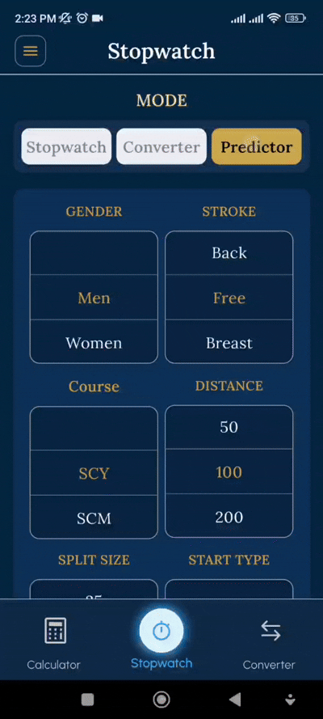
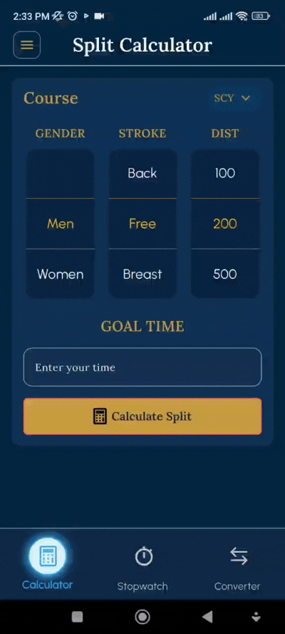
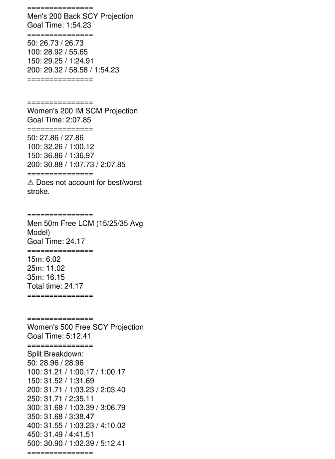
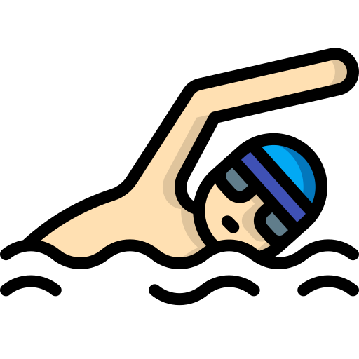

Built with real data from the Olympic Games, World Championships, and NCAA Championships.
Powerful tools for competitive swimmers
📊
Split Calculator
Get precise splits with elite pacing models.
🔄
Course Converter
Accurate conversion times between SCY, SCM, and LCM with splits.
📈
Stopwatch
View splits and predict race outcome with our final time predictor in real time.
Inside SwimMetrics
Clean, intuitive interface designed for swimmers and coaches

Stopwatch Predictor
Instantly predict finishing times as the swim progresses.

Split Calculator
Accurate conversion times between SCY, SCM, and LCM with splits.
Course Converter
Accurate conversion times between SCY, SCM, and LCM with splits.
Stopwatch Converter
Instantly convert times between SCY, SCM, and LCM.
Professional PDF Export
Clean, printable results in PDF format

Example of exported PDF with multiple events and clean formatting
Who It Is For?
Built for the entire swim community
Coaches
•
Simple performance-analysis companion to support training and goal setting
•
Faster, clearer pacing and split planning-so practices and race plans are built with more intent.
•
Quick conversions and time math without slowing down deck time

Swimmers
•
Get more confidence in your race plan-knowing what “race pace” feels like before you step up to the blocks.
•
Know your splits, paces, and conversions without guessing or poolside math
•
Achieve best times with clear targets and smarter pacing awareness
👨👩👧
Parents
•
Understand what the times mean-cuts, pacing, and what “next step” looks like-without needing to be a swim expert.
•
Get quick clarity during a season: what pace is needed and how events and goals compare across courses.
•
Support your goal oriented swimmer with a simpler, calmer meet prep-built around realistic expectations and actionable pace goals.
What Drives SwimMetrics:
Real Data for Real Training
SwimMetrics was founded with one clear mission: to give coaches and swimmers access to the same high-quality data and analytic tools used at the elite levels.
SwimMetrics has built a platform that uses real race data from the Olympics, World Championships, and NCAA Championships.
SwimMetrics provides data driven tools to coaches and athletes to train smarter and race faster.
Frequently Asked Questions
Everything you need to know about SwimMetrics
SwimMetrics provides three unique core tools:
• A Split Calculator that generates projected final times and split patterns from a goal time entered based on real world race-ratio data.
• A Converter that transforms swim times between SCY, SCM, and LCM using gender event-specific multipliers.
• A Stopwatch that records laps in real time and can convert times in the moment or project finish times depending on the mode.
Predictions use highly detailed ratio tables derived from elite competition data (the Olympics, World Championships, and NCAA Championships). While the projections are mathematically consistent and based on real patterns, they are still estimates — an athlete’s real split distribution may differ due to pacing strategy, fatigue, stroke efficiency, or race conditions.
Yes — all three.
• Coaches can create pace charts, race plans, set clear goals for athletes, and so much more!
• Swimmers can learn how to execute races smarter by utilizing the Split Calculator and communicating with their coach on how to meet their goals.
• Parents can quickly follow along with races using the Stopwatch predictor during races.
Parents please consult your Swimmer’s Coach before utilizing, implementing, and suggesting race strategies with your Swimmer.
Yes. All SwimMetrics tools include Export to PDF functionality. Exports use clean formatting with column balancing so events print neatly. You’ll receive both an HTML file and a fully formatted PDF.
Use them as pace charts for clear goals to be reached! BB cut, Age Group State Championships, Summer Juniors finalists, Olympic Trials qualifier, World Record, or whatever goal you are trying to reach, this is the tool for you!
The Stopwatch mode has 3 features:
1. Stopwatch mode → Regular stopwatch. Start, stop, split, and clear that track splits and overall time.
2. Predictor mode → Each time you press Split, SwimMetrics estimates the final time using your current pace and ratio patterns.
3. Converter mode → Each Split shows the live time in the starting course AND the converted time for the target course. No more guessing pace if warming up Short Course Yards and then racing Long Course Meters.
“From Start” assumes a standard race start (reaction + dive).
“From Push” assumes the swimmer begins in the water (like mid-set in training).
The app adjusts the opening split to account for the faster first split when pushing off instead of diving.
Each pool type has its own natural increments:
• SCY/SCM → frequently split in 25s
• LCM → splits are naturally in 50s
Longer events follow 50-meter increments, while shorter races (50/100) have special handling to match real splitting conventions and predictions.
The Converter uses either:
• Direct ratio-based conversions for distances with known elite baseline times
• Fallback universal conversion factors for simple course-to-course changes
Each conversion is consistent, reproducible, and grounded in stroke-specific and gender-specific reference times.
Some events don’t exist in every course type. For example:
• 500 SCY → converts to 400 SCM/LCM
• 1000 SCY → converts to 800 SCM/LCM
• 1650 SCY → converts to 1500 SCM/LCM
This is intentional and uses baseline elite reference times to calculate accurate conversion factors.
If a stroke-distance-course combination doesn’t exist in major competitions (i.e. 100 IM LCM) or lacks standardized ratios, SwimMetrics uses safe fallback logic or disables unsupported combinations to avoid misleading projections.
Ready to swim smarter?
Join coaches and athletes using elite data to improve performance.